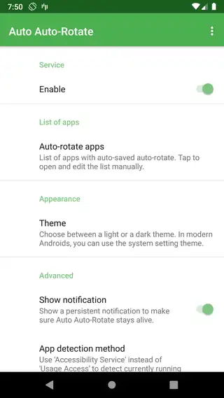
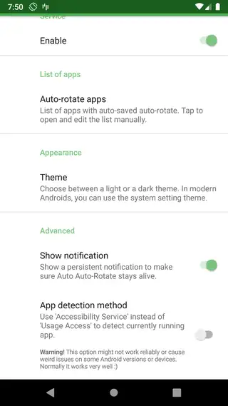

Auto Auto-Rotate
أدوات النظام
Auto Auto-Rotate هو تطبيق بسيط للغاية الذي يخزن الإعداد التلقائي للتدوير في Android لكل تطبيق. هل عادة ما تقوم بتعطيل التدوير التلقائي وتمكينه فقط لبعض التطبيقات؟ مثل معرض الصور الخاص بك، أو تطبيق الفيديو الخاص بك؟ هل تميل إلى نسيان إيقاف تشغيله بعد ذلك؟ هل يزعجك ذلك؟ ثم Auto Auto-Rotate السيارات هو
✓ ترخيص مفتوح (GPL-3.0-only) · آخر تحديث: 2026-10-15
1.2.4الإصدار
2.9 MBالحجم
GPL-3.0-onlyالرخصة
Open in Kanzتحميل APK (2.9 MB)
Download APK
SHA-256: 1a9a4628ae0105488db269a07393ae9f3e933ac54e4ad1eb3f4b0eeb1eaa64c7


تطبيقات تانية لنفس المطوّر (9)
More apps from this developer: com.jarsilio
امسح الكود لفتح صفحة التطبيق
Scan to open this app page
لو كنز مش متثبت عندك: نزّل متجر كنز.
Not installed? Get the Kanz store.